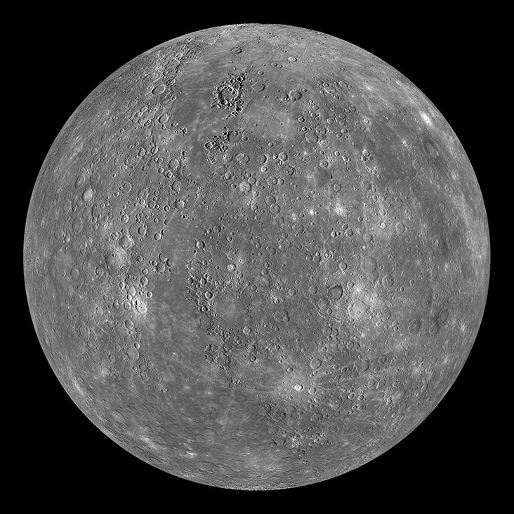
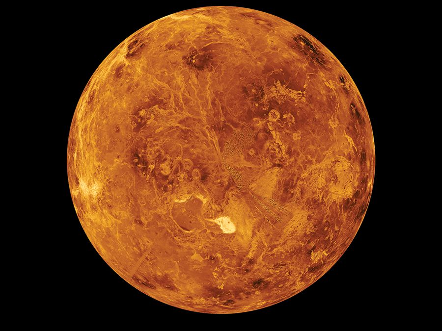
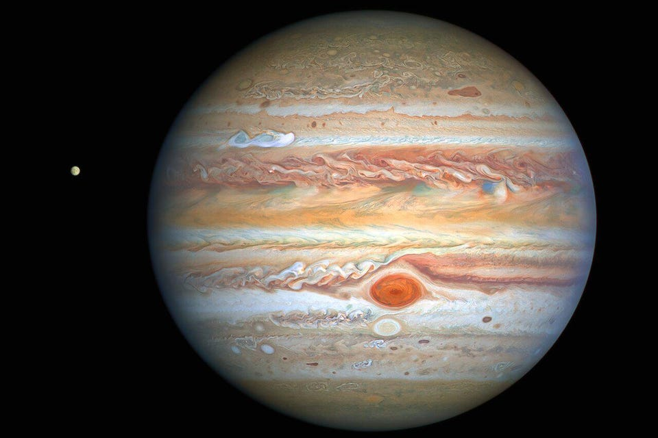
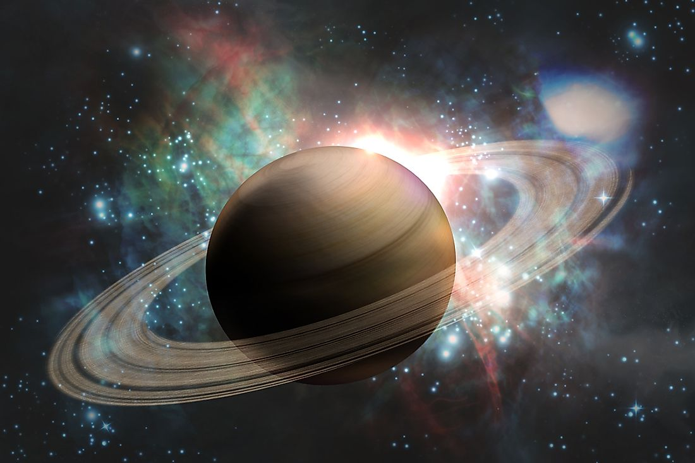
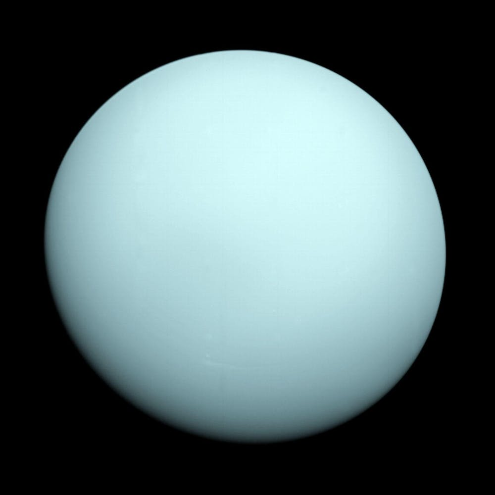
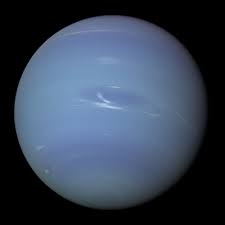

Mercury
Mercury is the smallest planet in the solar system with a diameter of just 4,876 kilometers, which is almost the size of continental United States. This diminutive planet is the closest to the sun. It takes the least time to orbit around the Sun of just 87.97 Earth days, thus, a year on Mercury would consist of only 87.97 days. Mercury possesses water, ice and organics and it's atmosphere changes with its distance to the Sun.
Venus
Venus is the second planet from the Sun. It is named after the Roman goddess of love and beauty It has diameter of about 12103.6 km. One day on Venus is equal to 243 Earth days, therefore, one day is 5,832 hours long. Venus is the second brightest natural object in Earth's night sky after the Moon.
Earth
Earth is the third planet from the Sun and the only astronomical object known to contain life. The Earth's rotation is gradually slowing. There is only one natural satellite of the planet Earth. The Earth is the densest planet in the Solar System. About 71% of the Earth's surface is made up of water.

Mars
Mars is the fourth planet from the Sun and the second smallest planet in the Solar System. Mars carries the name of the Roman god of war and is often referred to as the "Red Planet" Mars has 2 moons called Deimos and Phobos. Mars is smaller than Earth with a diameter of 4217 miles. Today, Mars has frozen water, but earlier it had flowing water.

Jupiter
Jupiter is the fifth planet from the Sun and the largest in the Solar System. It has a mass more than two and a half times that of all the other planets in the Solar System combined, but slightly less than one-thousandth the mass of the Sun. Additionally, it is the fastest spinning planet in the Solar System and has an extremely strong magnetic field that is 14 times stronger than the magnetic field of the Earth. Jupiter also has The Great Red Spot which is 350 to 500 kilometres deep and produces wind-speeds up to 432 km/h (268 mph).
Saturn
Saturn is the sixth planet from the Sun and the second-largest in the Solar System. Saturn is over 95 times more massive than Earth. It is the flattest plane. It's best known for the bright, beautiful rings that circle its equator consisting of countless particles of ice and rock that each orbit Saturn independently. It owns 82 moons. Fifty-three moons are confirmed and named and another 29 moons are awaiting confirmation of discovery and official naming.
Uranus
Uranus is the seventh planet from the Sun and has the third-largest planetary radius and fourth-largest planetary mass in the Solar System. It is also the coldest planet in the Solar System. Uranus also holds rings and its atmosphere of Uranus contains “ices”.
Neptune
Neptune is the eighth and farthest-known Solar planet from the Sun. Neptune has the strongest winds in the Solar System and is the coldest planet in the Solar System. It is 17 times the mass of Earth. Also, Neptune and Uranus are known to be twins. A year on Neptune lasts 165 Earth years.
